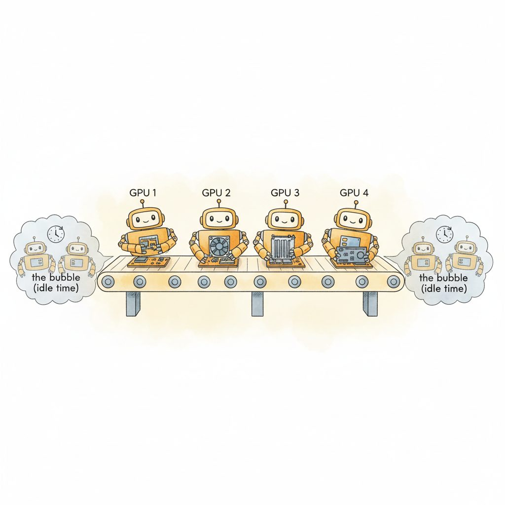
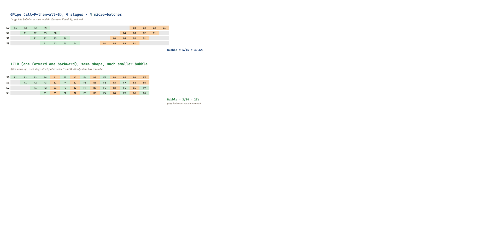

"Stage zero is bored, stage seven is bored, and the bubble between them is where my throughput went to die. Schedule me harder."
Sched, Bubble-Squashing Pipeline AI Agent
Pipeline parallelism (PP) splits the layer stack across $P$ devices and pipelines micro-batches through the resulting stages. Done naively (GPipe) it leaves a $\mathcal{O}(P/M)$ idle fraction (the bubble); 1F1B (Narayanan et al., 2021) and interleaved 1F1B (Megatron-LM, 2021) shrink that bubble, and zero-bubble schedulers (Qi et al., 2023) essentially eliminate it. PP is the third axis of distributed training after data parallelism (DP, replicate the model and shard the batch) and tensor parallelism (TP, shard each layer's matrix multiplications across devices); together these three are what makes 1T-parameter models reachable. In production, all three are composed: TP within a node, PP across nodes inside a "pod", DP across pods. The choice of how to apportion GPUs among $(TP, PP, DP)$ is the highest-leverage knob a frontier training run owns.
Prerequisites
This section assumes familiarity with tensor parallelism from Section 59.3 and with ZeRO and FSDP from Section 59.2. Familiarity with PyTorch autograd from Section 0.5 helps when reading the 1F1B scheduler walkthrough.
59.4.1 Why Add Pipeline When FSDP Exists?
The GPipe paper (Huang et al., 2019) was published while the authors were simultaneously training a model with 137 billion parameters, the largest neural net ever trained at the time. The 137B model was never released publicly because Google's lawyers concluded the inference cost would make any product around it unprofitable; the pipeline-parallelism technique outlived the model it was built for by years.
FSDP scales data parallelism efficiently to thousands of GPUs and reduces per-rank memory to $16/N$ bytes per parameter. Why bother with pipeline parallelism, which adds a famously tricky scheduler and a bubble penalty?
The answer is communication cost. FSDP requires an all-gather of each layer's parameters every forward and every backward pass, plus a reduce-scatter on each gradient. For a 70B model with $N=512$ data-parallel ranks, the per-step wire traffic is roughly $3 \cdot 2 \cdot 70 \times 10^{9}$ bytes $= 420$ GB per step. On a 400 Gb/s InfiniBand fabric, that is hundreds of milliseconds of communication. Pipeline parallelism moves only activations between stages (a few MB per micro-batch), which is orders of magnitude less than FSDP's parameter gathers.
The trade-off is that pipeline parallelism has a hard bubble: the first stage cannot start the second micro-batch until the first has cleared the pipeline; the last stage cannot start its backward until the first stage's forward has reached the end. This idle time scales as $(P-1) / M$ where $M$ is the number of micro-batches per step. The scheduler design problem is to make that bubble small.

59.4.2 GPipe: The Naive Schedule
GPipe (Huang et al., 2019) is the simplest pipeline schedule. The mini-batch is split into $M$ micro-batches; all forwards run first (filling and draining the pipeline), then all backwards run. The bubble is large but the algorithm is dead simple.

59.4.2.1 The Bubble Formula
With $P$ pipeline stages and $M$ micro-batches per global mini-batch, GPipe's bubble fraction is:
The interpretation: it takes $P-1$ time-slots for the pipeline to fill at the start of the forward, and another $P-1$ for the backward; while only $M$ slots are productive on each stage. The bubble shrinks as $M$ grows, but increasing $M$ shrinks each micro-batch (assuming a fixed global batch), which hurts GPU utilization within each kernel.
For $P=8$ and a typical $M=64$, the bubble is $7/64 \approx 11\%$. For frontier training where $P$ might be 16 or 32 and $M$ is constrained by memory, the bubble can easily reach 20-30%.
59.4.3 1F1B: One Forward, One Backward
Narayanan et al. (PipeDream, SOSP'19) introduced the 1F1B schedule. After an initial warm-up phase of $P-1$ forwards, each stage strictly alternates one forward (of micro-batch $t$) with one backward (of micro-batch $t-P+1$). Once steady state is reached, every stage is busy on every time step.
The total wall-clock for one mini-batch is the same as GPipe at the same $(P, M)$, but 1F1B's peak activation memory is dramatically lower. Under GPipe, all $M$ forwards complete before any backward starts, so $M$ activations stack up on each stage; under 1F1B, the first backward starts as soon as the first forward reaches the last stage, freeing activations on each stage as it goes. Peak activations per stage is bounded by $P$, not $M$.
This is the production default: every Megatron-LM, NeMo, and DeepSpeed-Megatron training run since 2020 uses 1F1B (or a refinement of it). The PipeDream paper's full title, "PipeDream: Generalized Pipeline Parallelism for DNN Training," is still the foundational reference.
59.4.4 Interleaved Pipeline: Virtual Stages
The 1F1B bubble can be shrunk further. Megatron-LM's interleaved 1F1B (also called virtual pipeline parallelism) divides the layers on each physical GPU into $v$ virtual stages, interleaved on the same device. With $v=2$, GPU 0 holds the first $L/(2P)$ layers and the $(P/2+1)$-th block of $L/(2P)$ layers, GPU 1 holds the second and $(P/2+2)$-th, etc.
The bubble fraction becomes:
For $v=4, P=8, M=64$: bubble $= \frac{1}{4} \cdot \frac{7}{64} \approx 2.7\%$. The price is that each "stage" is now finer-grained, so more inter-GPU sends per micro-batch. On NVLink within a node these are essentially free; over InfiniBand they start to bite. The interleaved schedule was used for Megatron-Turing 530B (Smith et al., 2022) and is the default in NVIDIA's Megatron-Core today.
59.4.5 Zero-Bubble Pipeline
The latest refinement (Qi et al., 2023) splits the backward pass into two halves: the activation-gradient computation $\nabla A$ and the weight-gradient accumulation $\nabla W$. The crucial observation is that $\nabla W$ only needs to complete by the end of the step, not immediately after $\nabla A$. By scheduling $\nabla W$ into the bubbles in the pipeline, the schedule reaches near-zero bubble in steady state.
This is more complex to implement (requires careful tracking of weight-update dependencies and a custom autograd path), but at the scale where you would do interleaved 1F1B, the throughput win is another 2-5%. DeepSeek-V3 (December 2024) was the first publicly disclosed 671B-scale run to use zero-bubble pipeline; Llama-4 and successive Megatron releases have followed.
Pipeline parallelism's bubble is the price of not doing an FSDP-style parameter gather every layer. Instead of $P$ parallel data replicas each issuing $O(\text{model size})$ communication per step, pipeline parallelism partitions the model along its depth and sends only activations ($O(\text{batch} \cdot \text{seq} \cdot \text{hidden})$) between stages. At 70B-scale, the activation traffic is 100-1000$\times$ smaller than the FSDP gather traffic. The bubble is the latency overhead that wraps that bandwidth saving, and shrinks as you increase the number of micro-batches.
59.4.6 3D Parallelism: The Modern Recipe
Frontier training combines all three axes. The standard layout uses a 3D grid of $N_{\text{total}} = TP \cdot PP \cdot DP$ GPUs:
59.4.6.1 Picking the Dimensions
For a model with $L$ layers, $H$ attention heads, hidden dim $d$, on a cluster of $N$ GPUs:
- $TP$: start at $TP = 8$ (NVLink fanout). Reduce only if $H$ or $d$ are not divisible by 8.
- $PP$: pick the smallest $PP$ that lets the per-stage memory fit, which is $\lceil M_{\text{model}} / (TP \cdot M_{\text{GPU}}) \rceil$ where $M_{\text{model}}$ is the model state, $M_{\text{GPU}}$ is available per-GPU memory after accounting for activations.
- $DP$: $DP = N / (TP \cdot PP)$. The global batch size is $DP \cdot (\text{micro-batch} \cdot M)$.
For a 405B model with $N=2048$ H100s:
- $TP = 8$ (NVLink within node).
- Model is $\approx 810$ GB of state per replica. Each TP rank holds $810 / 8 = 101$ GB, which does not fit on 80 GB. Pick $PP = 16$ so each stage holds $810 / (8 \cdot 16) \approx 6$ GB of parameters per rank, plus a similar amount of optimizer state with FSDP-1 inside the DP group.
- $DP = 2048 / (8 \cdot 16) = 16$ data-parallel replicas.
Global batch size at micro-batch 1 and $M = 64$ micro-batches per step is $DP \cdot M = 1024$ sequences. At $L = 8192$ tokens per sequence, that is 8.4M tokens per step. Llama-3 405B's actual training plan used roughly this layout (with slight variations across pod boundaries).
59.4.7 Breadth-First and Other Emerging Schedules
Two more recent developments:
- Breadth-first pipeline (Lamy-Poirier, 2023): all stages run forward on micro-batch $t$ before any starts forward on micro-batch $t+1$, but backwards interleave 1F1B-style. This gives slightly better memory utilization at the cost of a marginally larger bubble; useful for activation-heavy long-context training.
- Chimera (Li & Hoefler, SC'21): runs two pipelines in opposite directions on the same GPUs (each GPU is part of two virtual stages). Halves the bubble at the cost of doubling activation memory; the right trade for very deep models.
The pipeline-parallel literature is unusually rich; the basic 1F1B is enough for most teams, but custom schedules (zero-bubble, breadth-first) provide single-digit percentage improvements that matter at frontier scale.
BLOOM 176B (BigScience, 2022) trained on 384 A100 80GB GPUs with $TP=4$ (limited because Jean Zay's NVLink had only 4-GPU fanout), $PP=12$ (each stage held 7 of the 70 transformer layers), and $DP=8$. The global batch was 2048 sequences of 2048 tokens each. The bubble was visible (about 8% with $M=24$) but tolerable because TP=4 instead of 8 left more room in the all-reduce schedule. The Llama-3 generation has standardized on $TP=8$, $PP=8$-16, $DP$ = whatever fills the cluster; this is now the default. The OPT-175B retrospective (Zhang et al., 2022) documents the training instabilities BLOOM partly inherited from the same 3D configuration.
59.4.8 When Pipeline Parallelism Hurts
Pipeline parallelism has failure modes that FSDP and TP do not:
- Imbalanced stages. If the first or last stage has more work (embedding lookup, output head), the schedule's slowest stage sets the pace. Megatron's "balance" parameter lets you assign different layer counts per stage to compensate.
- Load imbalance across micro-batches. Variable sequence lengths within a global batch create stragglers within each stage. Bucketing the data by length (and pipelining each bucket separately) mitigates this; the "no padding" approach in long-context training amplifies the problem.
- The send/recv pattern is sequential. Activation passes between stages are point-to-point, and a single slow link breaks the entire pipeline. NCCL's
send/recvprimitives are simpler than collectives but have less aggressive overlap; production code uses Megatron's batchedSendBackward/SendForwardhelpers.
Vanilla DDP / FSDP gradient reduction averages BF16 gradients in BF16. Pipeline parallelism keeps the FP32 master weights on the stage that owns them and only sends FP16/BF16 activations, but the gradient on each stage's parameters is local and never reduced across stages (pipeline ranks own disjoint parameters). This is fine, except: gradient clipping, which traditionally normalizes by the global gradient norm, now requires an explicit all-reduce of $\| g \|^2$ across pipeline stages. Forgetting this is a classic "loss looks fine for 5000 steps then diverges" bug. The fix is in all production frameworks but is easy to miss in custom code.
59.4.9 Pipeline Parallel and Expert Routing in MoE Models
Mixture-of-Expert models add a fourth axis: expert parallelism, where each rank holds a subset of the experts and tokens are routed to the rank that owns the chosen expert. The routing is implemented as an all_to_all collective: each rank sends its tokens to the right destination and receives tokens routed to its experts.
Pipeline parallelism composes with expert parallelism in a slightly awkward way: the MoE layer is the bottleneck because all-to-all is expensive, so you want it concentrated in as few pipeline stages as possible. The GLaM (Du et al., 2022), Mixtral (Jiang et al., 2024), and DeepSeek-V3 (Liu et al., 2024) post-mortems all converge on the same recipe: interleave MoE layers with dense layers (typically every 2nd or 4th layer is MoE), pin each MoE layer to a single pipeline stage that owns all its experts, and use TP within the dense layers. The cross-rank all-to-all happens only at the MoE boundaries, not at every layer.
59.4.10 Context Parallelism for Long Sequences
For 100k+ context training, the activations along the sequence dimension become the bottleneck even with sequence parallelism. Context parallelism (also called sequence parallelism, distinguished from the Megatron sequence-parallel of Section 59.3) shards the sequence dimension itself across a new group of ranks. Each rank holds 1/C of the sequence and runs attention on its slice; the attention computation requires a ring-style exchange of keys and values around the context-parallel ring (Liu et al., FlashAttention-2, 2023).
The technique was scaled to a million-token context window in Gemini 1.5 (Google, 2024) and at the open level in NeMo's long-context training recipes. Context parallelism composes orthogonally with TP/PP/DP: it is a fifth axis. The communication cost is the all-to-all of K and V, which is $\mathcal{O}(L \cdot d)$ per layer; for 1M context this is in the hundreds of MB per layer, so context parallelism only works at the bandwidth tier where NVLink stops and InfiniBand begins, comparable to where tensor parallelism is viable.
torch.distributed.pipelining for GPipe and 1F1B without MegatronThe schedules above (GPipe, 1F1B, interleaved 1F1B) have lived in framework-specific implementations for years; PyTorch 2.4+ ships the official torch.distributed.pipelining API that turns any nn.Module into a pipeline-parallel run with a stage definition plus a choice of Schedule. Prefer the native API when the model is plain PyTorch and you want to avoid taking a Megatron-Core dependency for pipelining alone; DeepSpeed's PipelineModule remains the alternative when you are already on DeepSpeed.
Show code
import torch, torch.distributed as dist
from torch.distributed.pipelining import PipelineStage, ScheduleGPipe, Schedule1F1B
dist.init_process_group(backend="nccl")
rank, world = dist.get_rank(), dist.get_world_size()
# Each rank owns a SequentialChunk of the model.
stage_module = model_chunks[rank] # e.g. layers[rank*N//world : (rank+1)*N//world]
stage = PipelineStage(stage_module, stage_index=rank, num_stages=world,
device=torch.device("cuda", rank))
# Pick a schedule; same call site for GPipe or 1F1B.
schedule = Schedule1F1B(stage, n_microbatches=8, loss_fn=loss_fn)
for inputs, labels in loader:
if rank == 0: schedule.step(inputs)
elif rank == world-1: losses = []; schedule.step(target=labels, losses=losses)
else: schedule.step()Pipeline parallelism partitions the model along its depth and pipelines micro-batches through stages, paying a bubble penalty for the privilege of not gathering parameters every layer. GPipe is the dead-simple schedule; 1F1B halves the activation memory at the same throughput; interleaved 1F1B and zero-bubble pipeline shrink the bubble to a few percent. In practice, all three axes (TP, PP, DP) compose: TP inside a node, PP within a pod, DP across pods, with FSDP layered into the DP axis when state still does not fit. The rule of thumb for 2026 frontier training: max out TP at NVLink fanout, pick PP to fit per-stage memory, fill the cluster with DP. Section 59.5 takes us out of the algorithms and into the operational reality of running this for 30 days straight without losing a week to a single failed checkpoint.
Algorithms get you a parallelism plan; running that plan reliably at scale needs production-grade infrastructure. Continue to Section 59.5: Production Training Infrastructure.